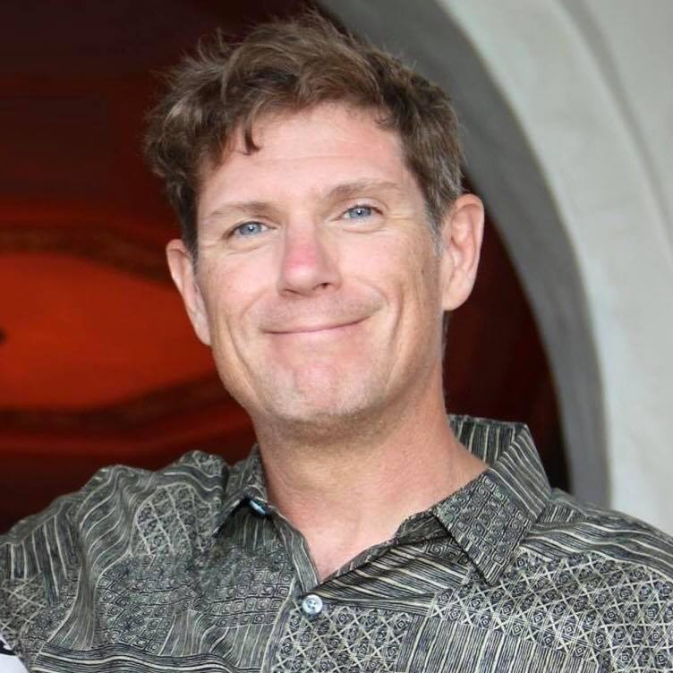

Biography
Originally from Montreal, Quebec, Canada, Doug found his way to Washington State via service in both the United States Navy and the United States Army. In the Navy, he served four years as a Search and Rescue Swimmer, and in the Army, he served an additional 20 years as a Forward Observer. In 2010, Doug moved to Gig Harbor, WA, where he retired to in May of 2013. Those 24 years in the military saw him and his family call several states home, to include Washington State, New York, Tennessee, Georgia, Texas, Florida, Mississippi...as well as the Republic of South Korea.
After completing his Military service, he felt that he still had so much to give back to both his community, as well as the Veterans who came before him, and those to follow. In 2013, he accepted a position as the Operations Manager for RallyPoint/6, a Non-Profit focused on helping Veterans in the South Puget Sound Region. In this capacity, he was able to continue serving Veterans through employment assistance, career counseling, as well as several other vital areas of focus. This position with RallyPoint/6 gave him the opportunity to continue his service, by assisting those Veterans’ making the transition back to the civilian sector. By becoming a part of RallyPoint/6, he felt that he was able to continue serving those who needed it the most…our Veterans. In 2014, he became the Director of Site Development for RallyPoint/6, tasked with establishing and maintaining Community Partnerships, which put the Veterans needs first.
In June of 2015, Doug felt that he had reached a crossroads in his life. Although RallyPoint/6 was continuing to grow, Doug’s passions lay in Community Development and Non-Profit Leadership. With this in mind, he accepted a position as the Executive Director with Rainier Therapeutic Riding – an Equine Therapy Facility focused on helping Veterans with PTSD, as well as autistic children. Through RTR, Doug found an incredible opportunity to continue giving back to the Veteran Community, and to those around him.
In April of 2016, an opportunity came up that he just could not pass on. He accepted a position as the Seattle City Impact Manager (subsequently as a Senior City Impact Manager) for The Mission Continues, a national non-profit whose mission it is to empower transitioning veterans through Community impact work. In this capacity, Doug was involved at the grass roots level in community building and community impact. He organized service projects in communities from Seattle to Portland to Honolulu, where community members were serving side by side with the veterans of our nation. It was an incredible opportunity to give back, and an opportunity to continue his service.
In June of 2018, an opportunity to lead the West Region of The Mission Continues as their Executive Director became available, and once again, Doug answered the call to serve. In this new capacity, Doug would lead operations West of the Mississippi River, ensuring that veterans would be at the forefront of service in their communities.
As COVID-19 hit in 2020, the nonprofit landscape began to shift. As the way we served our communities changed, so did The Mission Continues. Doug once again sought out a challenge, as he accepted a national role as the Senior Director of Platoon Expereince, a role that would see him and his team, shape the landscape fo veteran service across the entire nation.
Doug currently resides in Gig Harbor, WA with his spouse Teri. They have four children; Kristian (28 years old), Douglas (28 years old), Kalie (31 years old) and Gehrig (19 years old), where he is currently studying Software Engineering, and planning for what's next on the horizon.